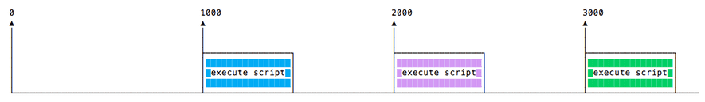
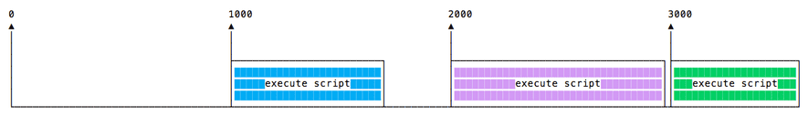
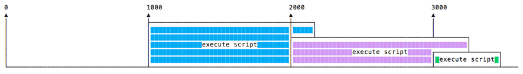
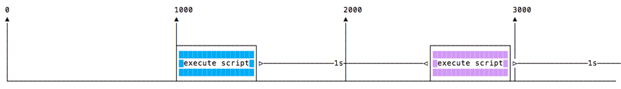

30. Таймеры (счетчики)
setTimeout()
При написании JS-кода может возникнуть необходимость отложить выполнение функции.
Это как раз то, что делает setTimeout(). Вы определяете функцию с отложенным выполнением и указываете время в миллисекундах:
setTimeout(() => {
// запустить через 2 секунды
}, 2000)
setTimeout(() => {
// запустить через 50 миллисекунд
}, 50)
Здесь мы определяем новую функцию. Однако вы также можете вызывать любые другие функции, передавать название существующей функции или набор параметров:
const myFunction = (firstParam, secondParam) => {
// код
}
// запустить через 2 секунды
setTimeout(myFunction, 2000, firstParam, secondParam)
setTimeout() возвращает идентификатор счетчика. Обычно он не используется, но вы можете его сохранить с целью дальнейшей остановки таймера:
const id = setTimeout(() => {
// запустить через 2 секунды
}, 2000)
clearTimeout(id)
Нулевая задержка
Если значением счетчика является 0, функция обратного вызова выполняется максимально быстро, но после выполнения текущей функции:
setTimeout(() => {
console.log('after')
}, 0)
console.log('before')
Этот код выведет в консоль before after.
Такой подход применяется во избежание блокировки ЦП сложными задачами, с целью выполнения других функций во время тяжелых вычислений, посредством помещения данных вычислений в очередь планировщика задач.
Некоторые браузеры (IE и Edge) реализуют метод setImmediate() с похожим функционалом, но он не является стандартным и не поддерживается другими браузерами. Однако setImmediate() является стандартной функцией в Node.js.
setInterval()
setInterval() - это функция, похожая на setTimeout(), с небольшим отличием: вместо однократного запуска колбека, она запускает его снова и снова, через заданные промежутки времени (в мс):
setInterval(() => {
// запускать каждые 2 секунды
}, 2000)
Приведенная функция будет выполняться каждые 2 секунды до тех пор, пока вы не выключите таймер с помощью clearInterval(), передав этому методу идентификатор счетчика:
const id = setInterval(() => {
// запускать каждые 2 секунды
}, 2000)
clearInterval(id)
Обычной практикой является вызов clearInterval() внутри setInterval(), позволяя последней самостоятельно определять, следует ли ей продолжать выполнение или же ей следует остановиться. В следующем примере код будет выполняться до тех пор, пока App.somethingIWait не получит значения arrived:
const interval = setInterval(() => {
if (App.somethingIWait === 'arrived') {
clearInterval(interval)
return
}
// другой код
}, 100)
Рекурсивный setTimeout()
setInterval() запускает функцию каждые n мс, независимо от завершения выполнения этой функции.
Если функция всегда выполняется за одно и тоже время, то все в порядке: 
Но что, если выполнение функции занимает разное время, например, в зависимости от условий соединения: 
Или одно долгое выполнение накладывается на другое: 
Во избежание этого вы можете создать рекурсивный setTimeout() с целью следующего вызова функции после завершения предыдущего:
const myFunction = () => {
// код
setTimeout(myFunction, 1000)
}
setTimeout(myFunction, 1000)
Этот сценарий выглядит так:

setTimeout() и setInterval() доступны в Node.js благодаря модулю "Таймер".
Node.js также предоставляет setImmediate(), являющийся эквивалентом seTimeout(() => {}, 0), используемый, преимущественно, для работы с циклом событий.